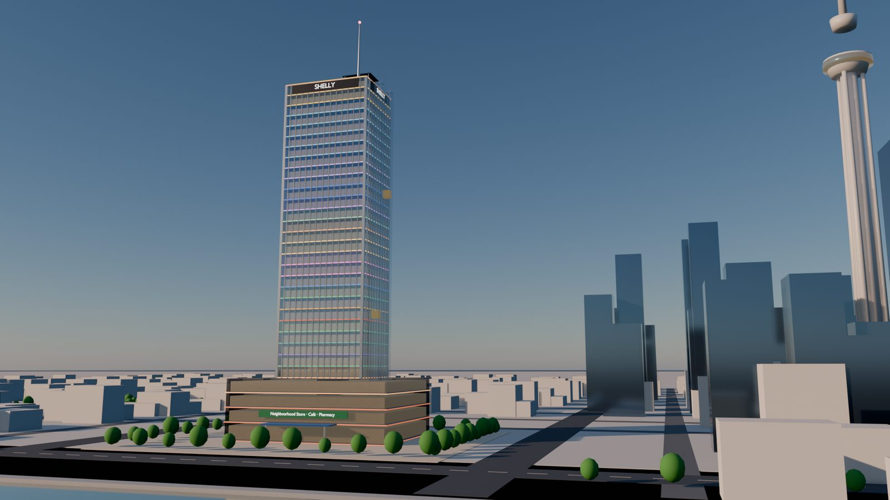

Shelly Tower in 3D. Every coloured band is a floor: tap one (or pick it from the directory) and it slides out so you can see inside and who works there. Switch between Today and 2050 to see the Shelly Business Centre: the same floors in a twisting garden tower, linked by skyways to the buildings on both sides. Drag to turn, scroll or pinch to zoom.
The plan. Built from Shelly Business Tower: Integrated Architecture (Pavi, 9 Oct 2026): Shelly OS, the agent mesh, nine sectors, sustainability, trust, the business model and the phases, each matched to the Shelly business that runs it.
The building. modules/tower/tower.yaml: every floor, who is on it, the business and technology cores, tenants, floors to let and the two looks. Change it and the page and the 3D tower follow.
Numbers. shelly/tower.py builds people, occupancy, rent roll and flags (synthetic, seeded by week) into docs/data/tower.js. python -m shelly tower prints the summary.
3D. docs/tower/world.js (three.js): floors stacked on the podium, glass lifts, the plaza and the city; a tapped floor slides out with its desks and people. 2050 twists the tower, grows the vertical garden, raises the satellite towers and links the buildings on both sides with skyways and sky bridges, and adds the holographic world map, media screens, air taxis, flying cars and drones.
Brain. The eight Shelly OS agents (Workplace, Retail, Logistics, Trade, Mobility, Energy, Security, Concierge) and the leasing agent sit in the Shelly Brain; medium and high-impact decisions (an MFC order over the limit, a new lease) wait in the one approvals tray.
Blender. The renders at the top were modelled, lit and rendered in Blender (EEVEE) from the same floor data; the scripts that build the model are kept with the .blend file, so the scene can be rebuilt and re-rendered when the tower changes.
City. The tower stands in a stylised massing model of Auckland city (CBD, Sky Tower, Albert Park, Victoria Park, the Viaduct and the harbour). It is a picture, not survey data. Tap 🏙 for the city view.